NOBODY CARES ABOUT MOST OF THE TAROT DECK.
People VAGUELY know about the major arcana, and MAYBE they know of the EXISTENCE of the minor arcana.
LET ALONE THE HISTORY! How many people even know that there ARE real games played with tarot decks?
Let alone how many know that the tarot deck was originally just a deck of playing cards?
It bothers me!
Oh, and also I'm a huge MTG nerd so the only option is to go make magic cards about it.
I've seen people create cards based on the major arcana, but NEVER on the minor arcana.
So the thing about the minor arcana is that it's split into 4 lots of 14. Just like the major arcana, the "meaning" of each card is a vaguely-defined vibes-based suggestion of a narrative originating from a game of telephone that has lasted from the early 19th century to this day. Regardless, the occult are a fascinating phenomenon, and I find the act of trying to understand how symbols have come hold the meanings they have.
After all... I play fucking Magic: the Gathering. These bastards sell their entire game on five arbitrary symbols holding so much meaning. So it's fun to try to connect some dots.
ANYWAY:
The general idea with the minor arcana is to take the number, find its meaning in numerology, and flavor it with the suit.
And so I did.
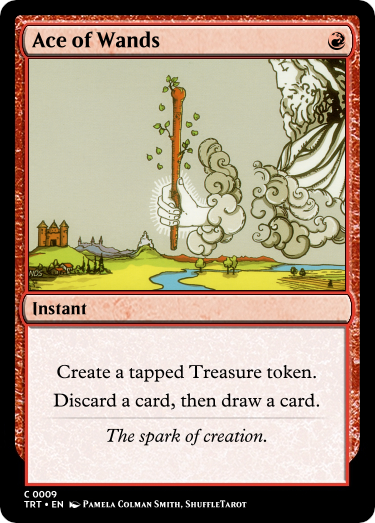
I think you can tell, "1" has to do with beginnings, in tarot.
Wands are all about willpower, initiative, and drive. That's red incarnate.
If you wanna dip your toe into another layer of pareidolia, Wands are associated with the classical element of Fire.
So I think that making it a tiny red spell is obvious.
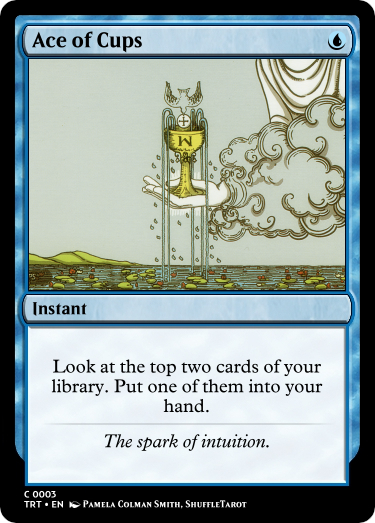
Cups are associated with both "Emotions" and "Intuition."
We'll be seeing them in white, blue, and a bit of red.
Anyway, in tarot, this guy means you're feeling something new, or you've had some little eureka moment.
You may be able to guess that Cups are associated with the classical element of Water.
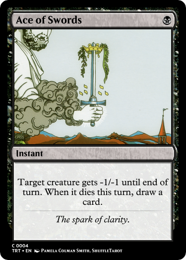
Swords are associated with clarity and truth. This is usually depicted as leading to despair, which is where I'm getting the black from.
Here, you find a weakness in the problem facing you, and if you successfully cut it down, are rewarded with knowledge (in card form.)
Neat, I think.
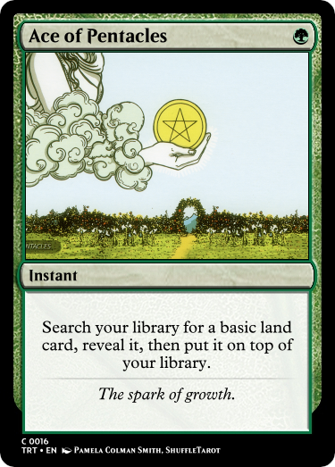
Pentacles have to do with the material world. Just to be clear, "pentacles" might as well be coins.
As you may guess, the material world is associated with Earth. That means... Swords are Air. I guess.
Here, the Ace represents the beginning in a literal sense: a seed is planted. You'll draw it later.
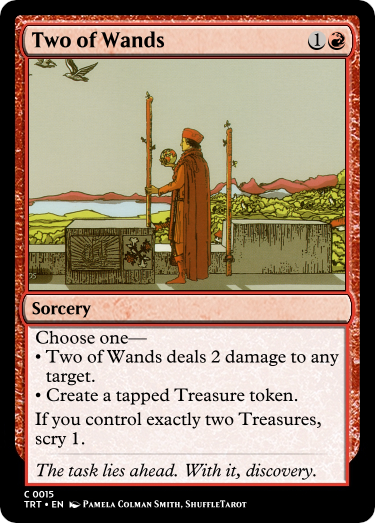
Twos are all about duality. Each of these Twos features a choice to reflect that.
For Wands, that means making decisions in the sense of planning for one's own future.
With this card, if you can finagle it right, you can plan even better.
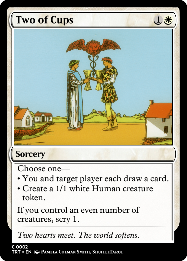
These Twos ALSO all feature a little minigame. If you can make something two-y, they give you a bonus.
Two of Cups signals Unity and Partnership. Here, partnering is flavored as being buddies with an opponent, and, well, white makes guys.
Have two (or zero) guys, and get bonus.
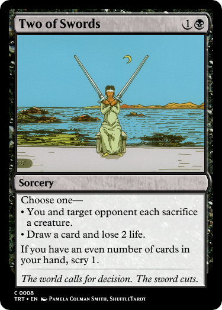
Two of Swords is about making decisions, but in the sense that these are difficult decisions to be made. A fork presents itself in the road, and only one path may be traveled.
Edicts are simple choices, and they are the easiest "difficult" choices to give.
Again, Swords is about harsh realities and truth. Cards are knowledge.
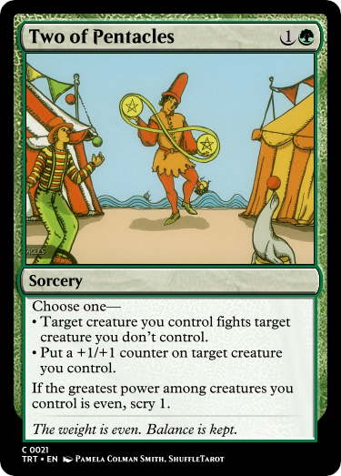
Two of Pentacles is about harmony with one's means. Like, understanding one's capabilities as well as one's limitations. The maximum and the minimum.
So, would you like to go on the offensive, or hang back and improve yourself?
Notably, the fighting creature will not die until after you get to scry.
Oh, and I absolutely cannot ignore this: The Panorama tarot deck I'm using for the art on these put a SEAL in this one! Yay! It's my favorite wahoo!
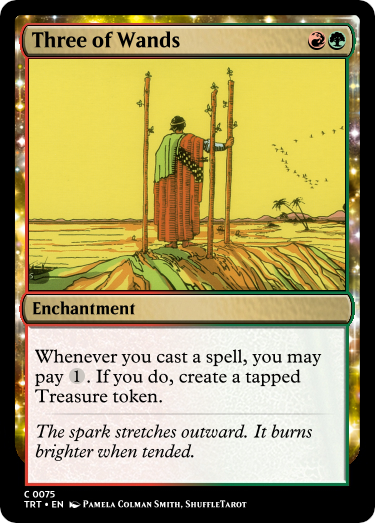
The Threes are all about you putting some effort in and seeing a tangible outcome.
Here, the effort you expend to take action fuels your next action. I think that's pretty clear-cut for Wands.
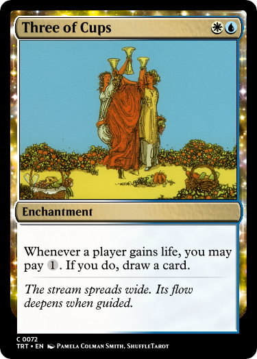
Three of Cups is about a union, a celebration. When anyone feels good, you can put a little effort into understanding them, and you will be rewarded for it.
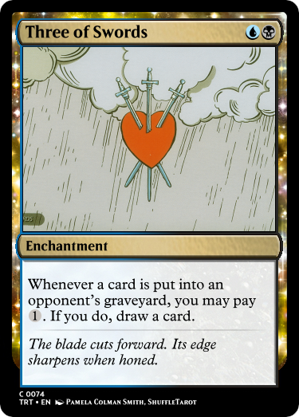
Look, that is a Stabbed Heart. Three of Swords is about grief and loss. So get bonus when things die.
We're gonna be milling people in this suit pretty soon. But killing them works too.
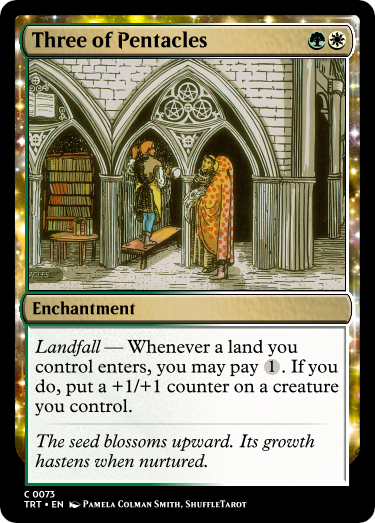
Three of Pentacles is about a lot of things. Its meaning has moved from one of nobility and honest labor to one of growth and construction. It's as though all this stuff is deeply, deeply arbitrary.
A lot of these are like that.
So this is about construction, let's say. Build farther, and reap greater reward.
Probably the easiest cost to pay, since when it enters, it will probably be primed to produce mana.
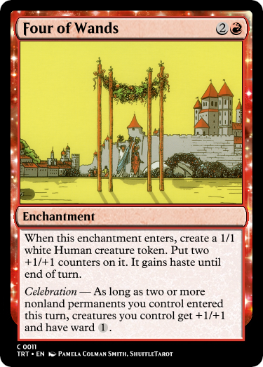
Fours are in some sense about structure, or regularity. So all of these Fours offer you some protection so long as you meet their condition. They also meet their condition by themselves on the turn they come in.
This card shows a celebration of some kind, so I thought this was an obvious bit of flavor. In tarot, this is supposed to signal that you are accomplished and celebrated. So go beat the shit out of that guy sitting on the other side of the table.
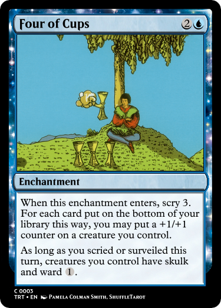
This card heralds a moment of contemplation, so it rewards you for looking ahead.
When you look ahead, you find a way through your obstacles.
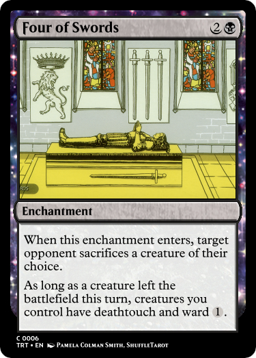
That guy's dead. This card likes it when things die (or are otherwise removed.)
In tarot, this card signals that you should probably hang back for a while and not rush on ahead. ('Cuz you'll die, but the tarot reader usually leaves that bit out.)
I didn't want the card to punish you, so if your opponents rush in while the condition is met, they die to deathtouch.
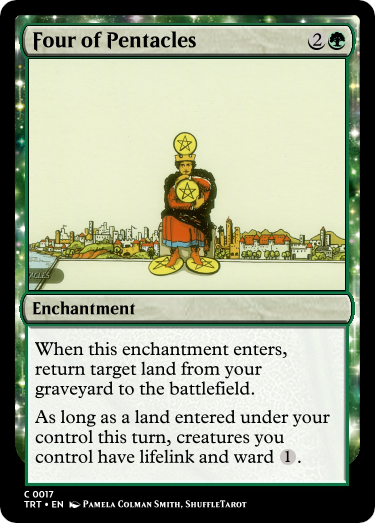
This is a man holding tight to his belongings. All of his moneys.
Unfortunately, making money (Treasure) more permanent in Magic is pretty much impossible. Treasures cease to exist almost instantly upon use.
And I can't reward you for using Treasures, because that's not the point of the card. So you get to reclaim one of your lost belongings, in another green way.
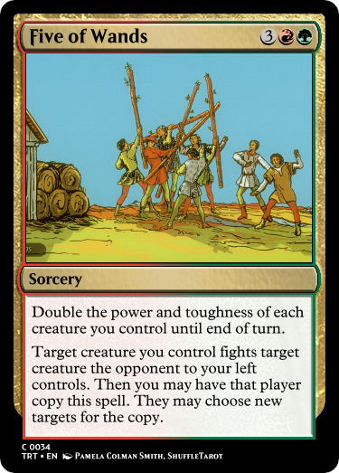
Fives are about disorder, in one way or another.
Disorder of Wands, of Willpower, is some kind of rivalry, or raucus disagreement.
I love the card Barroom Brawl. Absolutely wonderful.
This card also empowers you to take on the challenges of your rivals.
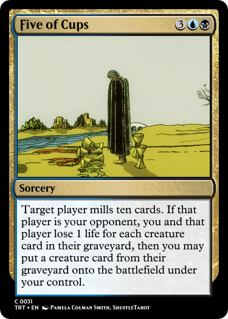
Disorder of Cups, Emotion, is some kind of trauma.
In tarot, people always point at how there are three spilled cups, but two filled ones. BUT, those cups are behind the subject, out of view. You still have something, but it's not obvious where.
Emotional loss like this is pretty plainly some kinda mill-y, graveyard stuff. I'm flavoring the "something you still have" as the thing you take from your opponent.
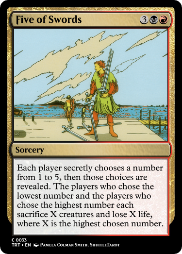
Disorder of Swords, Clarity, can mean uncertainty about one's path. It is taken to mean that your efforts are wasted and your victories are pyrrhic. You are acting underhandedly, and not communicating with your peers.
Do I hear UNDERHANDED SECRET CHOICES?? Confuse your opponents and try to weasel your way into NOT sacrificing half your board!
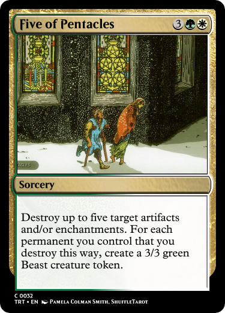
Disorder of Pentacles, Material, can mean you have lost something tangible.
So here's Big Disenchant, but you get bonus for losing your own stuff. Get rid of some Treasures or something.
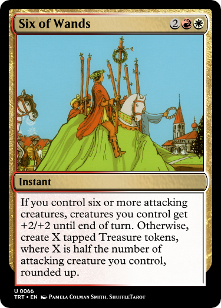
Sixes are about a reconciliation of some kind.
Six of Wands is about a recognition of one's worth, that you are celebrated for your achievements.
You have successfully attacked with several guys, and you get to probably win about it! Look at you aren't you so cool.
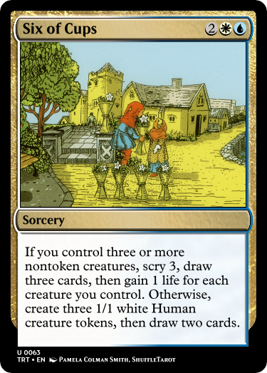
All of these cards will give a pretty good reward if you meet their condition, but a kinda meh reward if you don't.
Six of Cups is about nostalgia, or joy in community. You feel good if you have friends. Otherwise, you make some new ones in want for that community.
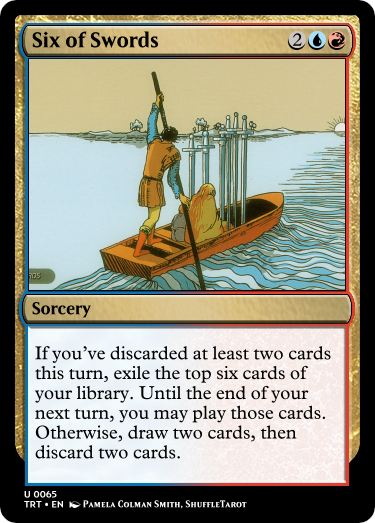
Six of Swords represents leaving one's current situation for another. Throw away your hand and you'll get another. Briefly.
Otherwise, you find some new stuff, but must lose something in the process.
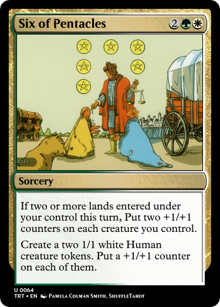
Six of Pentacles is about giving gifts and supporting others.
There's not really a... condition, implied in that. So if you have flourishing prosperity, you get big bonus.
Either way, those two guys in the art show up to help.
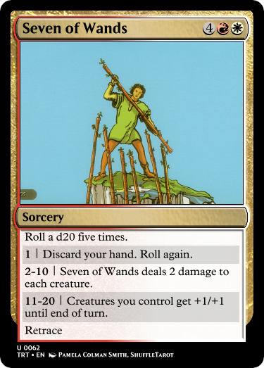
The Sevens are about unpredictability. Broadly.
The Seven of Wands is about being called on to use your capabilities. What task lies before you is unknown.
Here, if things go well for you, your opponents will be severely weakened and your creatures will be wounded, but powerful.
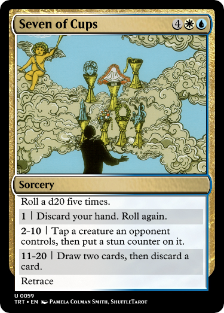
I really like dice. I'm very biased, but I thought this was a fun design.
The Seven of Cups is about having too many choices, and trying to calm everything down and come to a greater understanding.
So you remove blockers. And draw cards.
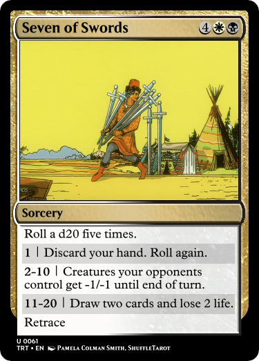
I'm not entirely happy with this design, but it's neat, in my opinion.
The Seven of Swords is about getting away with it. Doing something underhanded and it all works out, yippee.
I'd love to have some kind of theft effect, but it's hard to do that with the text limitations. So oh well, the underhanded aspect is you kneecap your opponents and then beat em up.
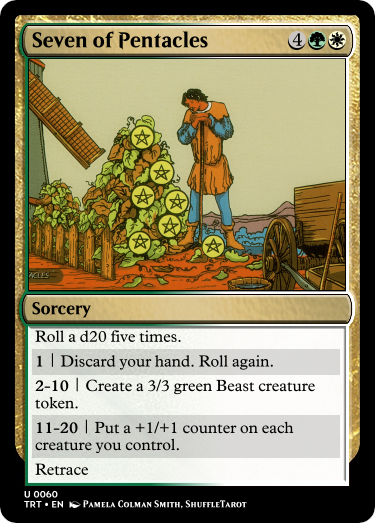
These cards all have retrace because with Sevens, the idea is that leaving the state that Sevens describe is a choice. You can go back and roll the dice again, if you want. (As long as you still have things in your hand worth paying its retrace cost.)
The Seven of Pentacles is about one's labor paying off. You're working that farm. So if you do it well, you'll eat well and get strong.
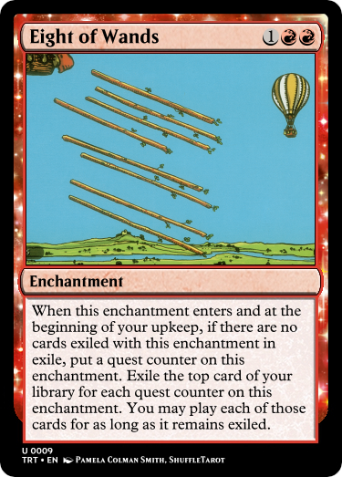
We're getting into the ones that have more individual flavor.
Eight of Wands is about momentum picking up. This is sometimes depicted as needing to "keep up" with what the world is giving you. Here, you draw more cards, but you'll draw more if you can churn through them quickly.
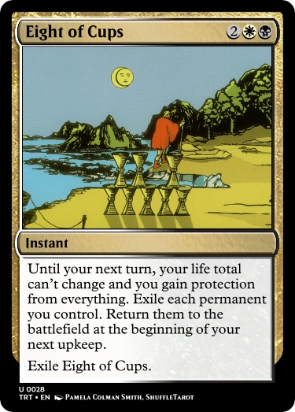
Eight of Cups is about walking away from your situation and maybe coming back later.
So this is Teferi's Protection, but it exiles your permanents instead of phasing them out.
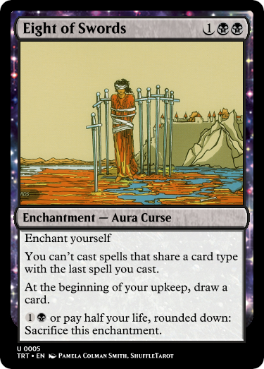
Eight of Swords signifies helplessness and anxiety, usually depicted as being a result of one's own self-sabotaging actions.
A Curse that says the words "enchant yourself" is very funny to me. I think it works nicely.
So it's Phyrexian Arena but without the life loss because you're already kneecapping yourself in another way.
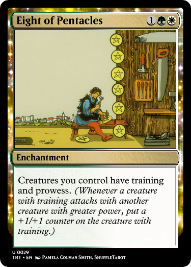
Just like the others, the Eight of Pentacles is in some sense about continuation.
Continuing to improve one's material environment means using your mastery (prowess) to continue to improve (training)
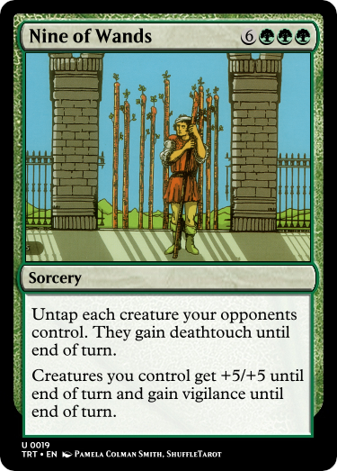
The Nine of Wands represents being "nearly there." The battle is almost completed.
So, like, this design is as good of a "one last push" thing as I can think of. Not hugely happy with this one.
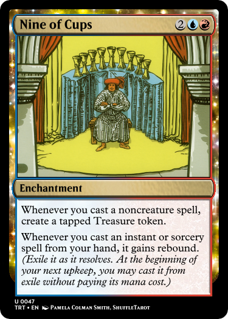
Look how happy he is with his stupid cups.
Like the other Nines, Nine of Cups represents "nearly there" in a Cups-y way. You are transitioning into a time of plenty.
So now your turns begin with a cascade of whatever you did last turn. This also has the effect of creating more Treasures.
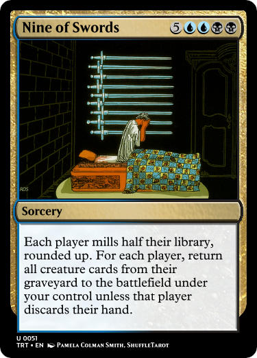
Me when the Swarm of Swords says they're breaking up with me
Anyway, this is another Swords-y card that says you're anxious and scared and such a whiny goddamn baby.
That usually means milling. A rare but fun payoff for milling is stealing stuff from your opponent's graveyard. This is nine mana! Take it all! End the game!
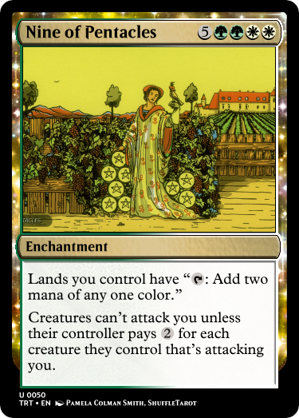
Here, "nearly there" in the material sense signifies that you're now able to sit back and enjoy the splendor you've created for yourself.
I don't actually think there's any effect that just flatly lets all your lands provide 2 mana like this.
Is that plus Ghostly Prison worth 9 mana? Probably not.
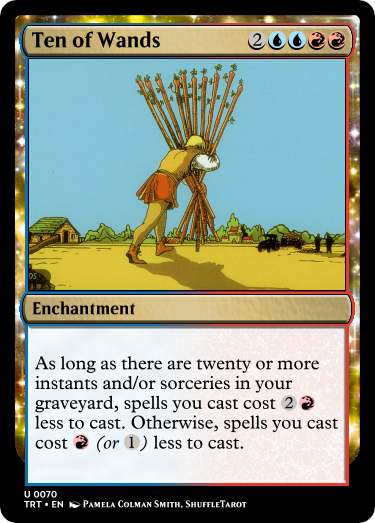
The Tens are all about having completed one's task.
If you've been slingin' spells all game, go storm off, I guess. Whatever.
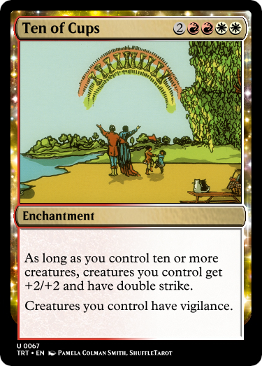
All of these are pretty plainly designed to just end the game pretty quickly after they land on the board.
For Cups, the ultimate emotional fulfilment leaves you stronger, empowered, and with no gaps in your defense.
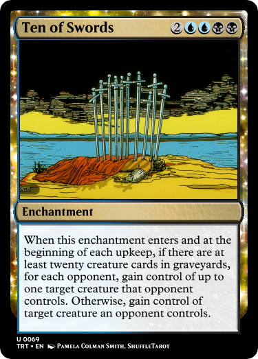
Yo that guy's dead
This card represents betrayal. Loss of relationships one holds dear.
I think making your opponents' creatures betray their owners is fitting. I think it's fitting that this card is likely to be most useful after a board wipe. This card's mean. But fitting.
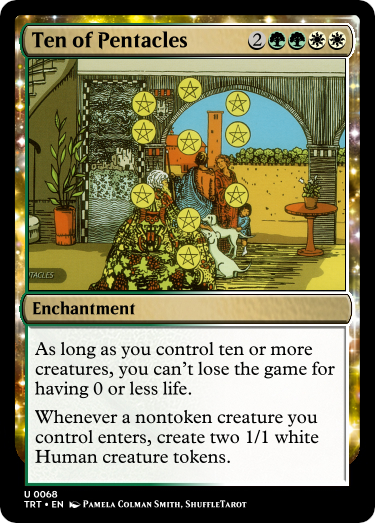
Culmination in the material sense is often depicted as an undying legacy, an eternal and indelible mark on the world.
So, you literally can't die. Your influence spans further, and everyone you call to help you brings friends.
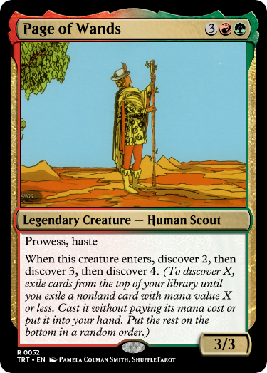
The Pages are a rank that simply does not exist in modern playing card decks. They are the first of the tarot deck's face cards, which are called the Court Cards.
The Page of Wands brings good news. It is hasty and might rush ahead. It is the first anthropomorphized force in this suit of willpower and creativity.
So it's a creature that discovers stuff for you. Notably, it cannot discover itself.
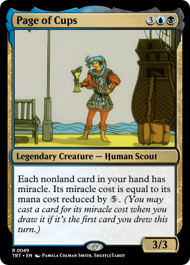
Historically, a "page" is literally just a servant. So these guys, in general, represent some kind of idea coming to you.
The Page of Cups heralds the coming of a kind of news that makes you go "oh, hey!" A surprise of some kind, probably an emotional one. Examples often include gossip or secrets.
This guy makes the first card you draw into a neat surprise. Pretty straightforward I think.
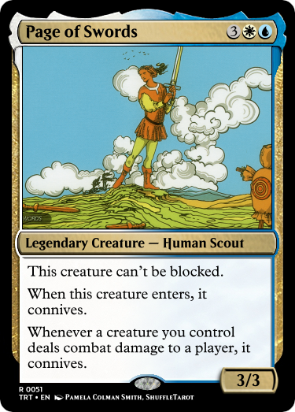
The Book of Toth, another rather influential source of tarot iconography, further split this rank into "princes" and "princesses" which I will not be caring about.
The Page of Swords signifies a kind of eureka that will only come if one waits and considers. Questions need to be asked, and stuff.
And guess what we got a word for that it's connive wahoo. They can't be blocked because they're very curious, you see. They've got curiosity, you see.
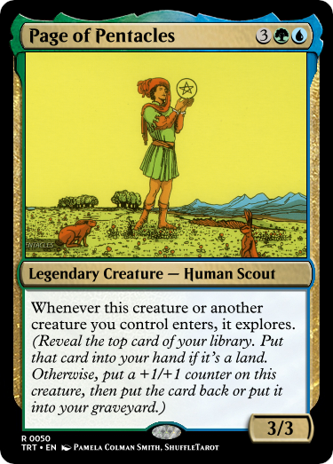
I think that it's interesting that the most popular surviving tarot deck today has 14 ranks. 14 is a weird number, right? 13 has huge cachet, 15 is a solid number, a multiple of 5. 14? Fourteen.
The Page of Pentacles bears news regarding one's future in the sense of how to grow.
And so, the cycle of Guys With Keywords Relating To Discovery comes to an end.
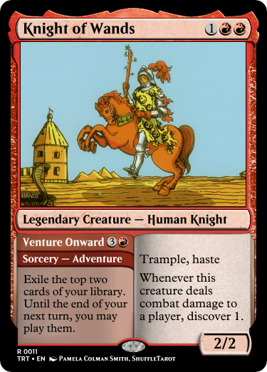
Knights all signal some kind of initiative force. They bear many of the same message-focused symbolism that Pages do.
Wands are still very, very red-aligned. Here, this Knight is so quick and ready to push on that he can even do it from your hand.
I liked the idea of having all the Knights have Adventures, but it didn't work very well.
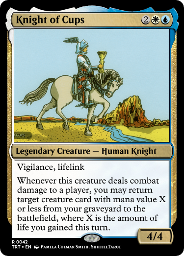
Several sources note the different ways the HORSES are posed in these arts. The one for Wands is showing off, ready to gallop. This one is in a slow trot. Etc. Y'know.
Knight of Cups is another messenger, but this one is usually depicted as very romantic. It is, literally, a knight in shining armor.
So this card lets you go back and find some lost love you used to pine for.
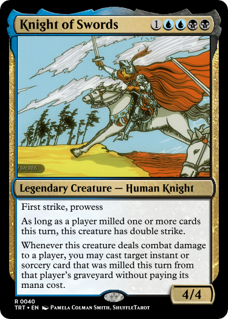
The Knight of Swords indicates some kind of messaging that is deeply confrontational.
The kind of thing that others need to take heed of and answer.
So this is an absolute bastard of a card that takes advantage of anything your opponents may have forgotten.
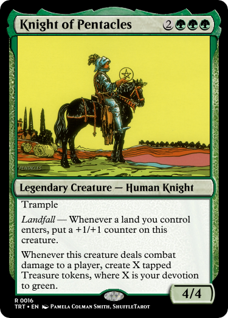
Pentacles are still about the material, and here this guy is about the coming of a reward for your efforts.
Those with strong devotion reap greater rewards this way.
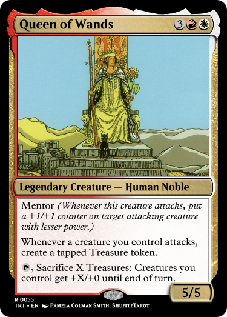
Queens are all motherly figures of some sort.
Here, the Queen of Wands is the most motherly of the bunch, and as such, she has mentor.
The Queen here represents a very palpable threat, because the turn after it comes down, you're likely to just use her ability to push through and win the game.
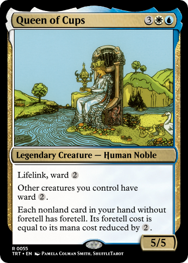
The Queen of Cups is often depicted as like, a psychic. Among other things. These face cards are all deeply, deeply whatever you want them to be.
So anyway, psychics foretell stuff. I just like this mechanic.
The Queen of Swords is another helpful caretaker character. This one instructs you to step back and make a clear, logical decision.
Swords are so, so blue. Anyway, here, whenever a threat presents itself, the Queen immediately discerns how to defeat it. There's a little minigame here, because every creature your opponent plays, you can ask yourself, are they baiting me? Will there be a second, bigger creature this turn? Probably not, usually.
That bottom ability is wholely unrelated to the card, but I like the idea in the sense that it allows you, the player, to make a decision, with all the facts otherwise hidden from you. Also, I wanted a black effect in here to make it fit with the other three Queens.
The Queen of Pentacles is a very practical figure. It's often depicted as being like, VERY motherly. I can't avoid bringing it up, all of these fall into very obvious gender roles, I'm not a fan.
However, this line of text was too fun for me to not write. She can do it all! She can Manufact Academies with the best of 'em.
The Kings are leaders. They are less focused on the desires of their suit, and more focused on guiding people to get there.
The King of Wands is just here to do red things on his own, but he is here to lead his people (and himself) into combat in any way that works.
Obviously, all of these Kings make you the monarch. I feel that's a necessity.
The King of Cups is very in-tune with his emotions, and I wanted to depict that as just, like, talking about what he wants at any given time. Plus, voting is a fun minigame.
All of these Kings also have abilities that are much more powerful while you're the monarch. A king without his crown is much less effective, yeah?
Here, the King of Swords is a stern leader, not afraid to cast down any idea he deems foolish. He will find the path that's best, and as long as his kingdom has momentum, he's sure to do so.
I am NOT afraid to put the Kozilek ability on another creature.
The King of Pentacles is a provider. The sort of king that would throw a festival of plenty.
So here we have a twist on the Aragorn and Arwen ability. I don't really have much more than that, honestly.
This is the only tarot-based card that WotC actually designed themselves.
I've elected to include it on the basis that it makes for a good example.
Flubs is a rathe popular commander, because his ability encourages you to kneecap yourself, which is what commander is all about. We love that shit over there.
The Fool, as a card, represents the beginning of a journey, of having no idea where the world is taking you. What's on top of your deck? Who knows. Just play the hand you're dealt.
(The hand contains 1 card.)
So, for most of these major arcana, I've made them commanders, in the same vein.
I won't claim that any of them are ESPECIALLY interesting, or even as appealing as Flubs. He's a Frog. I can't beat that. But I tried.
I will say, a lot of these don't lend themselves very well to magic vernacular.
The major arcana are often depicted as a story that plays out in relation to The Fool. Here, the Magician is a character that shows the Fool how to make choices and learn to actually desire things.
He also has the four other tarot suits on the table, signifying that he has some sort of power over them.
I was tempted to give each of the tarot cards, like, a supertype, in the same way "Snow" is just tossed onto cards to mark them as "caring about snow." I feel like that always comes off as especially silly, though.
So as far as this design truly goes, he gives you the choice to direct your resources in the way you want, and then he can also cast anything he's seen someone else cast.
High Priestess has an emphasis on the "Priestess." She is a knower of the occult and the ways of the unseen parts of the universe.
There are very few effects which exile things from your hand, but many of them depict secrecy or planning for the future. Morph, plot, disguise, foretell.
However, those are quite rare. Speak with the priestess, and she can help you make plans out of any resource you have to hand.
The Empress is fertility and abundance.
So have more creatures and an Orzhov Advokist rolled into one.
Very little to say about this one.
The Emperor is a ruler, he is an authority, but depicted as a just and good force.
So he sets rules, and empowers the weak to attack with confidence.
I like the politics that I imagine could form around this. You don't HAVE to attack alone, but all players have a choice when combat comes around. His first ability makes it much more likely that there will be mana left over for a big attack. (Though that attack will not have trample.)
A hierophant is a type of high-ranking priest, and the term originated in ancient Greece. You might call this card a high priest, a mirror to the High Priestess.
Where the High Priestess is reserved and conniving, the Hierophant teaches his acolytes openly. Think about those gender roles.
Anyway, learn is a keyword in magic. And there are no commanders at the moment focused on it.
The Lovers reprsent unity, and may also signify that one must wrestle with two contradictory things.
Obviously they have Soulbond because it pairs things. That choice in this design is like, cliché.
The other part I think is much better. The card rewards you for attacking, but also for having them die. The two are contradictory.
Due to the name of the card, I guess every creature this pairs with forms a throuple. Good for them.
The Chariot represents the power to overcome obstacles and maintain control over your situation.
Many depictions emphasize the power of the Chariot's control, its ability to choose.
So you get to choose exactly how your opponents are going to lose. You may only do this if you have two guys ready to pull the chariot.
That first choice is a VERY scary piece of text, but Odric isn't, like, hugely problematic? I think 6 mana is more than fine for this.
Strength indicates that you have the power to remain calm and capable, even in the face of strong opposition.
So here's Wolverine, except instead of encouraging you to have 50 fight spells, Strength only helps you in real, honest combat.
I've decided they also include the cat. The lion is on most tarot decks' art for Strength.
The Hermit indicates that solitude may lead to greater understanding.
So I wanna reward introspection, and I love cards like this that slightly alter how you follow instructions on cards.
The wheel is comprised of both the good times and the bad times, and it is always turning.
But, unfortunately, magic already has a term named wheel of fortune. So here, if you make the person to your left discard stuff, every other player, (including you) has to discard cards.
Whenever you see someone (including you) discard a card you like, you can keep it, for a price.
Justice signals retribution. It reminds you that every action has a reaction.
As much as I've been using bunches of different keywords in this pile of cards, I don't wanna use the words 'commit a crime.' So I didn't. I don't think the vibe is right, here, weirdly, despite the fact that Justice literally has legal scales.
(Using crimes also makes the text much less understandable.)
The Hanged Man is about surrender in some aspect. That the best course of action might be to simply allow the universe to take its course, and to observe.
So if you allow creatures to hit you, the universe hits your opponent back, and you learn from the experience.
(Also, you can gain life better, to compensate.)
Death, famously, is not actually a negative tarot card. It signals metamorphosis, an ending of some kind immediately followed by a new beginning.
However, it does say "Death" right there. So the current board dies, and another board spawns in right after.
Temperance is yet another tarot card extolling balance. This one is the "everything in moderation" kind of balance. That you should bite off only what you can chew.
So cast two-color stuff. Dip your toe into different disciplines. Oh, and split spells, too. Rooms are split spells. If you cast a spell with fuse, it's counted as one, single, split spell.
The Devil bonks you on the head and tells you to stop indulging yourself. It's the card that calls you a schmuck. You're being tempted in some way to act in a way you should not.
So anyway, all your opponents' cards gain the text "Sacrifice something: Draw a card! Side-effects include headache, nausea, vomiting blood, and...
Notably, one of the things YOU can sacrifice to bargain things is: Your own red Devils, who wanna be sacrificed anyway!
I feel like making bargains with the devil is a necessary bit of flavor on this card.
The Tower signals a catastrophic change of some kind. While not necessarily a negative change, it's hard to interpret in any other way. The artwork depicts a lightning bolt destroying the titular tower, and many decks retain this detail.
So, this card shows up, Lightning Bolts something, then you get to remove your opponent's favorite things.
This card is intentionally not a commander. I don't want this effect on a commander.
This card has no teeth. The Star just symbolizes... hope? Bleh.
The best thing I can say is that, to return to the idea that the 22 major arcana form a narrative, that the Star follows the anguish caused by the Tower.
So this card lets you bring back whichever creature died to the Tower. And, bonus, it shows you the way to your future, you can just put anything you scry into your hand.
The Moon is associated with illusion and deception. In tarot, it is heavily associated with uncertainty.
When this card enters, everyone loses track of who's who. The effect is only temporary, but for a few turns, the identities of the cards on the board become uncertain.
Also, this card has a little lobster guy on it. Neat!
The Sun heralds success and fulfilment. I don't even have to explain this one. It's the sun. You know what the sun does. You like the sun. It's nice. It's warm.
I'm a big fan of the recently-revealed Solstice Revelations card. Fittingly, those revelations also appear when the sun is at its peak. Revelations, as well, involve revealing lots of cards.
I thought about having this card mirror The Moon, and maybe flip face-up all of the face-down cards. But face-down-ness is so, so rare. I didn't really see much reason to do that.
Judgment indicates that you should reflect on yourself and act in a just and sure way.
I didn't have a great idea for this one, it doesn't lend itself well to this, I think. So the card here just demands that nobody attack the little guy. You give gifts as rewards to anyone who acts according to these laws, and hopefully all of this is to your benefit.
(It is you who decides which creature gets the counter. Will you be nice, and put the counter on the creature that would most enjoy it? Probably not.)
The World signals completion, wholeness, perfect unity. Fulfilment in its entirety.
So it sorta has to be a big-ass "you probably win the game" card. There's no shortage of 9+ mana, 5 color, big splashy huge spells. This one isn't even particularly interesting.
However, I will point out, it grows stronger while you have no cards in your hand, BECAUSE of The Fool! Completing this task requires a condition that is similar to The Fool, but impossible to accomplish while The Fool is in play.